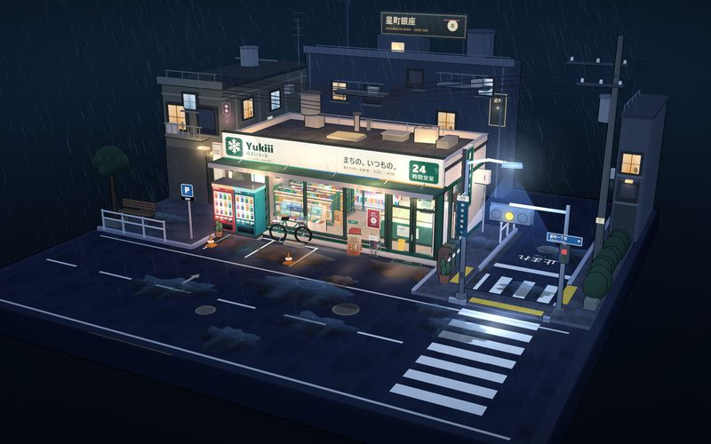
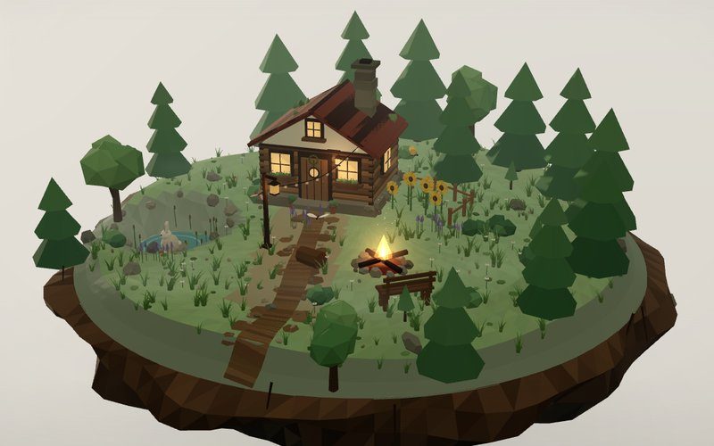
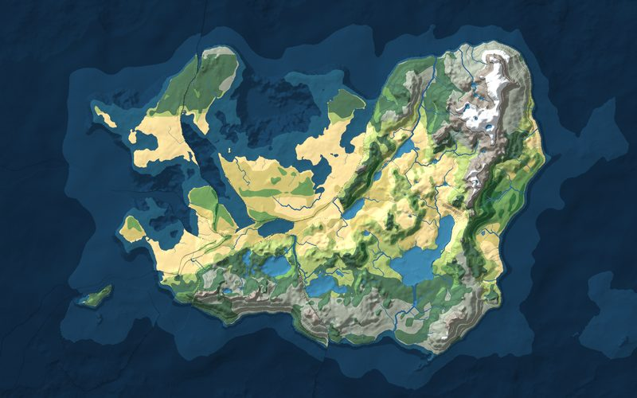

雨夜便利店 · Rainy Night Konbini
一个可以拖动、旋转、缩放的雨夜街角小场景：日式便利店、发光的冷柜、自动贩卖机、自行车、斑马线和一直下着的雨。右上角的小面板能开关自动门、切换下雨、重播组装动画。三渲二卡通渲染，开场时零件从地面逐件升起，组装成这个街角。使用 DeepSeek-v4.1-Flash-1017 生成。
去看看 →About
我是 Yukishiro，17 岁。
站上现在有七个能直接在浏览器里玩的小项目：几个小游戏、两个 3D 微缩场景，还有一个架空世界地图生成器。都不用下载，点进去就能玩。
喜欢空闲时间搞点好玩的东西，程序大部分都是 AI 帮忙写的，正在学习 HTML / CSS / JavaScript 等。
Skills
不是样样精通，都是边做边学。下面按「学到哪了」分个类。
正在学
用过一点
写代码时的帮手
Work
做过的和正在做的小东西，都放在这里。点进去就能玩。

一个可以拖动、旋转、缩放的雨夜街角小场景：日式便利店、发光的冷柜、自动贩卖机、自行车、斑马线和一直下着的雨。右上角的小面板能开关自动门、切换下雨、重播组装动画。三渲二卡通渲染，开场时零件从地面逐件升起，组装成这个街角。使用 DeepSeek-v4.1-Flash-1017 生成。
去看看 →
一座漂浮在林间的低多边形微缩小屋：原木墙、木瓦屋顶、冒着炊烟的石头烟囱，门口点着篝火，池塘边有兔子和萤火虫。可以拖动旋转、滚轮缩放，顶栏切换白天 / 黄昏 / 夜晚，底栏一键飞到大景、小屋、篝火和林间。所有几何、纹理、天空与火光都是程序生成的，没有一张外部图片。
去看看 →
生成一个四面环海的完整世界版图：山脉沿板块碰撞带隆起，沙漠落在副热带高压下，雨林长在赤道，河流从分水岭汇进海里。可换种子、调陆地占比和环海宽度，还能切换气温、降水、板块等图层。
去看看 →Project / Others
2D 文字战术指挥游戏 · Windows
你是一支九人侦察小队的队长 —— 不扣扳机，只下命令。在卡累利阿的针叶林里带队潜伏、侦察、和友军队伍配合，在暴露、体力与队员之间的信任里做取舍。看，记住，然后离开。文字优先：九个人各有裂缝，关键选择会跨章延续。